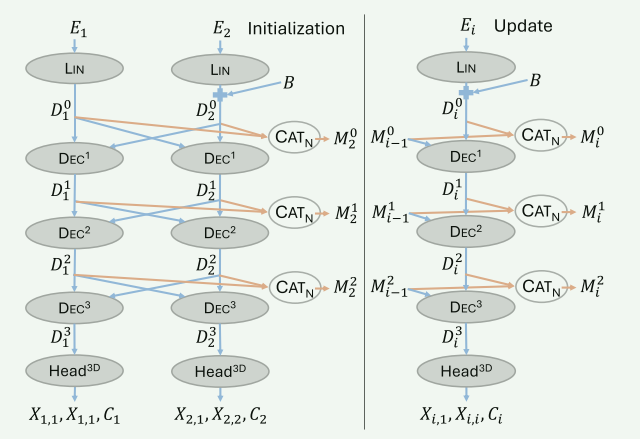
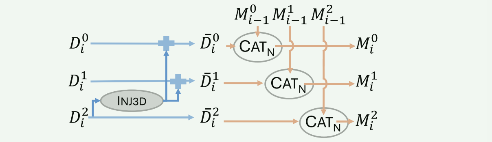

- [[#MUSt3R: Multi-view Network for Stereo 3D Reconstruction]]
- [[#pipeline]]
- [[#1. 摘要+引言]]
- [[#2. 相关工作]]
- [[#3. 方法]]
- [[#3.1. 扩展到任意数量N视图输入]]
- [[#3.2 引入因果性]]
- [[#3.3 内存管理]]
- [[#4. 训练]]
pipeline
1. 摘要+引言
DUSt3R: all predictions live in different coordinate systems, requiring global post-processing to align all predictions into a global coordinate system. 面临的问题：如何解决平方复杂度？如何快速优化？如何时序预测？
MUSt3R: Based on DUSt3R. Making it ==symmetric== and enabling n inputs; ==memory mechanism== that can decrease computational complexity for both offline and online.
2. 相关工作
MASt3R 增强了匹配能力，在有标定/深度监督时，选择绝对尺度估计；
MonST3R 扩展到了动态；但还是image pair -> 需要 global alignment。
Spann3R 使用 spatial memory 来存储之前帧信息。（仍然 pairwise）
Pass 1: img -> ViT_enc -> tar_dec -> feature （Target Decoder）；
Pass 2: feature + query_fea (with K & V) -> memory_enc -> mix_features -> dec -> pointmaps & confidence map （Reference Decoder）。
所以两步分别可以概括为：（1）准备图像特征（编码与提取）；（2）利用 memory 加强特征的全局性并预测。第一帧没有 memory 可以查询，所以 ViT 之后，直接存储到 memory 中；最后一帧只是无需存储 memory，但它其实也是跑了 pass1 的；对于中间帧，两个 pass 都需要。
3. 方法
想做的事情：多个图像 → 一次统一编码 → decoder 内部多视图交互（via attention） → 同时预测多个视图的结构，保持几何一致性
3.1. 扩展到任意数量N视图输入
简单将DUSt3R 直接扩展到 N 个视图直接输入显然不行，因为这样需要 N 个 decoder ，而且时间和空间都爆了。
反正每个decoder 之间都需要 cross view interaction, 所以本文提出统一用一个对称的decoder来做，siamese decoder 内部 cross attention，这样参数固定，不会因为视图增多而训练成本增大。同时还额外预测一个 pointmap 来进行后续相机参数估计。
1. 简化 DUSt3R 结构
- 本文认为 DUSt3R 的两个 dec 和 head 学习到的东西是几乎一样的，所以选择用一个共享权重的 Siamese decoder 和共享 Head 来代替 -》参数少且扩展性更强。
- 给除Ref以外的都加一个 embedding B，来标记是否是参考视图。
- 同时证明：DUSt3R在 cross_attention 中的 RoPE 在 MUSt3R 这样的结构中影响不大，可以去掉。
2. 扩展多视图
改结构之后天然支持多视图，只需要改造 decoder cross attention 就可以：每个图像 Ii 的 decoder token Dil 都与其他所有图像的 token 做 cross attention。（迭代单向更新）
拼接 l 层所有图像 token：Mnl = CATN(D1l,...,Dnl) ；
拼接除第 i 张图像的所有 token：Mn − il = CATN(D1l,...,Di − 1l,Di + 1l,Dnl)；
最终 decoder 更新为：Dil = Dec(Dil − 1,Mn − il − 1) 。
本文中直接使用单向的迭代更新：Dnl = Dec(Dnl − 1,Mn − 1l − 1)。
==不和 Spann3r 一样那么复杂的前向记忆，直接就是 cross attention 混合，无需 QKV 的复杂运算。==

3. 快速回归位姿
DUSt3R 中想得到 X1, 1 和 X2, 2 需要把 (I1,I2), (I2,I1) 各进行一次推理，所以想回归所有的视图 pose 就得为每个图像成对跑网络，太慢了。本文改造 Head ，直接输出 (Xi, ref,Xi, i,Ci)，可以直接估计位姿了（无内参/无尺度信息的前提下仍然有效）。==本质就是让 Head 多输出一个自己坐标系下的 pointmap==
3.2 引入因果性
Decoder cross attention 通过上一层自己和其他所有图像 token 进行混合，实现单向的迭代更新（因果性：每张图只能看到过去图像）。
rendering 过程进一步优化输出，在已知所有帧后重新计算前帧输出，打破因果实现更高质量的结果。==这让它支持 online ，但是 offline 的效果会更好。==
causal forward:
def forward_causal(self, new_image, memory): ... # cross-attend to memory x = self.decoder(new_image_token, memory) # add to memory memory.append(x) return x, memoryrendering (non-causal):
def forward_render(self, target_image, full_memory): ... # cross-attend to full memory, no update x = self.decoder(target_image_token, full_memory) return x已知所有图像后，使用完整 memory 重新计算任意图像的输出（pointmap / camera pose）提升精度，尤其适合离线推理。
Global Feedback: 靠近输出的层会有更多的信息，但是浅层却缺少全局帧（上下文）的信息，类似 skip connection 一样给浅层传递全局信息。
做法：将最后一层 decoder 中融合后的全局 token 表示，注入到所有旧帧的低层 token 中。

3.3 内存管理
启发式进行选择性记忆
online：要即时决定哪些帧保留到记忆中
根据当前预测 Xi, 1 和 discovery rate 来决定是否需要保留。
Discovery rate ：把场景储存为 KD树，每个3D点按观察方向分配到不同树。每个像素通过球坐标的视角方向分到对应 KD tree（这样是避免所有的点都在一棵树上太重，而且按照方向可以在保证查询方向的基础上减少查询复杂度），查找它到现有场景的最近距离，然后把这个距离除以像素深度得到相对距离，取所有归一化像素的 p-th 百分位数作为 discovery rate。如果高于 τd 就说明该帧观察到了足够多的新区域，要加入记忆中。
这个距离在log 空间上做的欧氏距离。
offline：选择并排序关键帧建立场景记忆（Spann3r 也做了类似）
相似度检索得到少量的关键帧（覆盖最大化），然后再按照重叠度从高到低重新排序，然后逐步加入网络与记忆交互，更新 memory 和 3D场景，==记忆固定后，把所有图像再经过一次网络，render操作，不写入记忆。==
4. 训练
一阶段类似 DUSt3R：成对图像 → 统一坐标系的点图，在 log-space 做监督。
Croco v2 预训练权重初始化，224 -> 微调到 512 上再训练。得到一个 对称的 DUSt3R 。
二阶段引入 memory 与 render ：少视图建立记忆，逐步更新到全记忆，再基于记忆去渲染全部视图。双坐标损失把全局一致和局部自洽同时学习，然后还配合了 token dropout 增强记忆鲁棒性。
先用两张图初始化 memory ，再送入其他。
token dropout：但是保护第一帧的 memory tokens 不丢弃，因为所有点都是以第一帧为参考系。